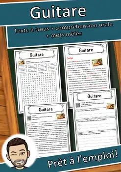
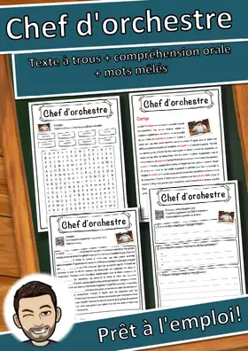
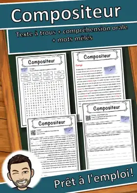
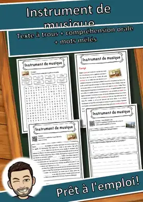
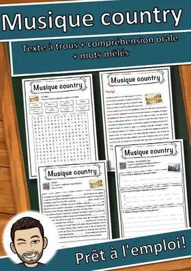
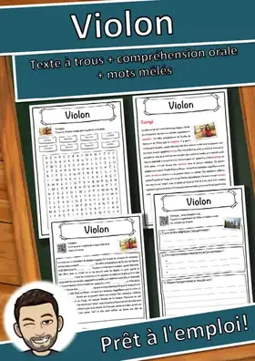
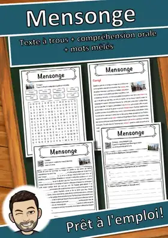
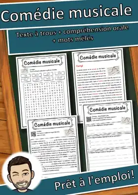
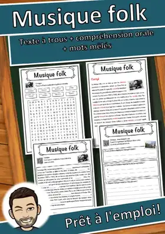

Musique
85 fiches en français sur le thème « Musique », prêtes à imprimer et avec corrigé.
85 ressources
Niveau

Guitare – Compréhension de lecture : texte à trous, écoute et mots mêlés

Chef d'orchestre – Fiche : texte à trous, compréhension orale et mots mêlés

Compositeur – Fiche : texte à trous, compréhension orale et mots mêlés
Guitare – Fiche : texte à trous, compréhension orale et mots mêlés
Musique électronique – Fiche : texte à trous, compréhension orale et mots mêlés

Violon – Fiche : texte à trous, compréhension orale et mots mêlés
Piano – Fiche : texte à trous, compréhension orale et mots mêlés

Instrument de musique – Fiche : texte à trous, compréhension orale et mots mêlés

Musique country – Fiche : texte à trous, compréhension orale et mots mêlés

Violon - Fiche - texte à trous, compréhension orale et mots mêlés

Mensonge – Fiche : texte à trous, compréhension orale et mots mêlés

Comédie musicale – Fiche : texte à trous, compréhension orale et mots mêlés
Violoncelle – Fiche : texte à trous, compréhension orale et mots mêlés

Musique folk – Fiche : texte à trous, compréhension orale et mots mêlés
Kazoo Fiche de musique : texte à trous, compréhension orale et mots mêlés
Kazoo Fiche de musique : texte à trous, compréhension orale et mots mêlés
Handpan Fiche de musique : texte à trous, compréhension orale et mots mêlés
Handpan Fiche de musique : texte à trous, compréhension orale et mots mêlés
Cornemuse Fiche de musique : texte à trous, compréhension orale et mots mêlés
Cornemuse Fiche de musique : texte à trous, compréhension orale et mots mêlés
Tam-tam Fiche de musique : texte à trous, compréhension orale et mots mêlés
Tam-tam Fiche de musique : texte à trous, compréhension orale et mots mêlés
Tambour sur cadre Fiche de musique : texte à trous, compréhension orale et mots mêlés
Tambour sur cadre Fiche de musique : texte à trous, compréhension orale et mots mêlés
Koto Fiche de musique : texte à trous, compréhension orale et mots mêlés
Koto Fiche de musique : texte à trous, compréhension orale et mots mêlés
Charango Fiche de musique : texte à trous, compréhension orale et mots mêlés
Charango Fiche de musique : texte à trous, compréhension orale et mots mêlés
Bouzouki Fiche de musique : texte à trous, compréhension orale et mots mêlés
Bouzouki Fiche de musique : texte à trous, compréhension orale et mots mêlés
Darbouka Fiche de musique : texte à trous, compréhension orale et mots mêlés
Darbouka Fiche de musique : texte à trous, compréhension orale et mots mêlés
Tabla Fiche de musique : texte à trous, compréhension orale et mots mêlés
Tabla Fiche de musique : texte à trous, compréhension orale et mots mêlés
Erhu Fiche de musique : texte à trous, compréhension orale et mots mêlés
Erhu Fiche de musique : texte à trous, compréhension orale et mots mêlés
Oud Fiche de musique : texte à trous, compréhension orale et mots mêlés
Oud Fiche de musique : texte à trous, compréhension orale et mots mêlés
Planche à laver Fiche de musique : texte à trous, compréhension orale et mots mêlés
Planche à laver Fiche de musique : texte à trous, compréhension orale et mots mêlés
Sonnaille Fiche de musique : texte à trous, compréhension orale et mots mêlés
Sonnaille Fiche de musique : texte à trous, compréhension orale et mots mêlés
Claves Fiche de musique : texte à trous, compréhension orale et mots mêlés
Claves Fiche de musique : texte à trous, compréhension orale et mots mêlés
Güiro Fiche de musique : texte à trous, compréhension orale et mots mêlés
Güiro Fiche de musique : texte à trous, compréhension orale et mots mêlés
Bol chantant Fiche de musique : texte à trous, compréhension orale et mots mêlés
Bol chantant Fiche de musique : texte à trous, compréhension orale et mots mêlés
Soubassophone Fiche de musique : texte à trous, compréhension orale et mots mêlés
Soubassophone Fiche de musique : texte à trous, compréhension orale et mots mêlés
Viole de gambe Fiche de musique : texte à trous, compréhension orale et mots mêlés
Viole de gambe Fiche de musique : texte à trous, compréhension orale et mots mêlés
Chalemie Fiche de musique : texte à trous, compréhension orale et mots mêlés
Chalemie Fiche de musique : texte à trous, compréhension orale et mots mêlés
Concertina Fiche de musique : texte à trous, compréhension orale et mots mêlés
Concertina Fiche de musique : texte à trous, compréhension orale et mots mêlés
Bandonéon Fiche de musique : texte à trous, compréhension orale et mots mêlés
Bandonéon Fiche de musique : texte à trous, compréhension orale et mots mêlés
Guimbarde Fiche de musique : texte à trous, compréhension orale et mots mêlés
Guimbarde Fiche de musique : texte à trous, compréhension orale et mots mêlés
Mbira Fiche de musique : texte à trous, compréhension orale et mots mêlés
Mbira Fiche de musique : texte à trous, compréhension orale et mots mêlés
Boîte à rythmes Fiche de musique : texte à trous, compréhension orale et mots mêlés
Boîte à rythmes Fiche de musique : texte à trous, compréhension orale et mots mêlés
Synthétiseur Fiche de musique : texte à trous, compréhension orale et mots mêlés
Synthétiseur Fiche de musique : texte à trous, compréhension orale et mots mêlés
Thérémine Fiche de musique : texte à trous, compréhension orale et mots mêlés
Thérémine Fiche de musique : texte à trous, compréhension orale et mots mêlés
Tom basse Fiche de musique : texte à trous, compréhension orale et mots mêlés
Tom basse Fiche de musique : texte à trous, compréhension orale et mots mêlés
Pan Fiche de musique : texte à trous, compréhension orale et mots mêlés
Pan Fiche de musique : texte à trous, compréhension orale et mots mêlés
Carillon tubulaire Fiche de musique : texte à trous, compréhension orale et mots mêlés
Carillon tubulaire Fiche de musique : texte à trous, compréhension orale et mots mêlés
Chocalho Fiche de musique : texte à trous, compréhension orale et mots mêlés
Chocalho Fiche de musique : texte à trous, compréhension orale et mots mêlés
Maracas Fiche de musique : texte à trous, compréhension orale et mots mêlés
Maracas Fiche de musique : texte à trous, compréhension orale et mots mêlés
Glockenspiel Fiche de musique : texte à trous, compréhension orale et mots mêlés
Glockenspiel Fiche de musique : texte à trous, compréhension orale et mots mêlés
Castagnettes Fiche de musique : texte à trous, compréhension orale et mots mêlés
Castagnettes Fiche de musique : texte à trous, compréhension orale et mots mêlés
Aucune ressource trouvée – essaie un autre mot ou un autre filtre.